Collaboration, authorship and data policies
Developing a Code of Conduct
Whether you are joining a lab group or establishing a new collaboration, articulating a set of shared agreements about how people in the group will treat each other will help create the conditions for successful collaboration. If agreements or a code of conduct do not yet exist, invite a conversation among all members to create them. Co-creation of a code of conduct will foster collaboration and engagement as a process in and of itself, and is important to ensure all voices heard such that your code of conduct represents the perspectives of your community. If a code of conduct already exists, and your community will be a long-acting collaboration, you might consider revising the code of conduct. Having your group ‘sign off’ on the code of conduct, whether revised or not, supports adoption of the principles.
When creating a code of conduct, consider both the behaviors you want to encourage and those that will not be tolerated. For example, the Openscapes code of conduct includes Be respectful, honest, inclusive, accommodating, appreciative, and open to learning from everyone else. Do not attack, demean, disrupt, harass, or threaten others or encourage such behavior.
Below are other example codes of conduct:
Authorship and Credit

Navigating issues of intellectual property and credit can be a challenge, particularly for early career researchers. Open communication is critical to avoiding misunderstandings and conflicts. Talk to your coauthors and collaborators about authorship, credit, and data sharing early and often. This is particularly important when working with new collaborators and across lab groups or disciplines which may have divergent views on authorship and data sharing. If you feel uncomfortable talking about issues surrounding credit or intellectual property, seek the advice or assistance of a mentor to support you in having these important conversations.
The “Publication” section of the Ecological Society of America’s Code of Ethics is a useful starting point for discussions about co-authorship, as are the International Committee of Medical Journal Editors guidelines for authorship and contribution. You should also check guidelines published by the journal(s) to which you anticipate submitting your work.
For collaborative research projects, develop an authorship agreement for your group early in the project and refer to it for each product. This example authorship agreement from the Arctic Data Center provides a useful template. It builds from information contained within Weltzin et al (2006) and provides a rubric for inclusion of individuals as authors. Your collaborative team may not choose to adopt the agreement in the current form, however it will prompt thought and discussion in advance of developing a consensus. Some key questions to consider as you are working with your team to develop the agreement:
- What roles do we anticipate contributors will play? e.g., the CASRAI CRediT project identifies 14 distinct roles:
- Conceptualization
- Data curation
- Formal Analysis
- Funding acquisition
- Investigation
- Methodology
- Project administration
- Resources
- Software
- Supervision
- Validation
- Visualization
- Writing – original draft
- Writing – review & editing
- What are our criteria for authorship? (See the ICMJE guidelines for potential criteria)
- Will we extend the opportunity for authorship to all group members on every paper or product?
- Do we want to have an opt in or opt out policy? (In an opt out policy, all group members are considered authors from the outset and must request removal from the paper if they don’t want think they meet the criteria for authorship)
- Who has the authority to make decisions about authorship? Lead author? PI? Group?
- How will we decide authorship order?
- In what other ways will we acknowledge contributions and extend credit to collaborators?
- How will we resolve conflicts if they arise?
Data Policies
As with authorship agreements, it is valuable to establish a shared agreement around handling of data when embarking on collaborative projects. Data collected as part of a funded research activity will typically have been managed as part of the Data Management Plan (DMP) associated with that project. However, collaborative research brings together data from across research projects with different data management plans and can include publicly accessible data from repositories where no management plan is available. For these reasons, a discussion and agreement around the handling of data brought into and resulting from the collaboration is warranted and management of this new data may benefit from going through a data management planning process. Below we discuss example data agreements.
The example data policy template provided by the Arctic Data Center addresses three categories of data.
- Individual data not in the public domain
- Individual data with public access
- Derived data resulting from the project
For the first category, the agreement considers conditions under which those data may be used and permissions associated with use. It also addresses access and sharing. In the case of individual, publicly accessible data, the agreement stipulates that the team will abide by the attribution and usage policies that the data were published under, noting how those requirements we met. In the case of derived data, the agreement reads similar to a DMP with consideration of making the data public; management, documentation and archiving; pre-publication sharing; and public sharing and attribution. As research data objects receive a persistent identifier (PID), often a DOI, there are citable objects and consideration should be given to authorship of data, as with articles.
The following example lab policy from the Wolkovich Lab combines data management practices with authorship guidelines and data sharing agreements. It provides a lot of detail about how this lab approaches data use, attribution and authorship. For example:
Section 6: Co-authorship & data
If you agree to take on existing data you cannot offer co-authorship for use of the data unless four criteria are met:
- The co-author agrees to (and does) make substantial intellectual contribution to the work, which includes the reading and editing of all manuscripts on which you are a co-author through the submission-for-publication stage. This includes helping with interpretation of the data, system, study questions.
- Agreement of co-authorship is made at the start of the project.
- Agreement is approved of by Lizzie.
- All data-sharers are given an equal opportunity at authorship. It is not allowed to offer or give authorship to one data-sharer unless all other data-sharers are offered an equal opportunity at authorship—this includes data that are publicly-available, meaning if you offer authorship to one data-sharer and were planning to use publicly-available data you must reach out to the owner of the publicly-available data and strongly offer equivalent authorship as offered to the other data-sharer. As an example, if five people share data freely with you for a meta-analysis and and a sixth wants authorship you either must strongly offer equivalent authorship to all five or deny authorship to the sixth person. Note that the above requirements must also be met in this situation. If one or more datasets are more central or critical to a paper to warrant selective authorship this must be discussed and approved by Lizzie (and has not, to date, occurred within the lab).
Policy Preview
This policy is communicated with all incoming lab members, from undergraduate to postdocs and visiting scholars, and is shared here with permission from Dr Elizabeth Wolkovich.
Creating a data portal
Data portals are a new feature available through DataONE. Researchers can easily view project information and datasets all in one place across the federated network of repositories.
What is a Portal?
A portal is a collection of DataONE federated repository data packages on a unique webpage.
Typically, a research project’s website won’t be maintained beyond the life of the project and all the information on the website that provides context for the data collection is lost. Portals can provide a means to preserve information regarding the projects’ objectives, scopes, and organization and couple this with the data files so it’s clear how to use and interpret the data for years to come. Plus, when datasets are scattered across the repositories in the DataONE network, portals can help see them all in one convenient webpage.
Portals also leverage DataONE’s metric features, which create statistics describing the project’s data packages. Information such as total size of data, proportion of data file types, and data collection periods are immediately available from the portal webpage.
Portal Uses
Portals allow users to bundle supplementary information about their group, data, or project along with the data packages. Data contributors can organize their project specific data packages into a unique portal and customize the portal’s theme and structure according to the needs of that project.
Researchers can also use portals to compare their public data packages and highlight and share them with other teams, as well as the broader research audience.
To see some example of what portals could look like, view the Toolik Field Station, Ecoblender Lab and SASAP portals.
Portal Main Components
Portals have five components: an about page, a settings page, a data page, a metrics page, and customizable free-form pages.
About Page
This page is the first page users will see after initially creating a new portal, and it is highly recommended that users use this feature to create a description for their portal. Add a picture of your logo, a title and description of your portal, and freeform text using the markdown editor.

Settings Tab
On the settings tab, users can give the portal a title and assign it a unique url; also referred to as a portal identifier. Users can add a general description of the portal, upload an icon photo for their data, and upload icon photos from any partner organizations that have contributed to the data. These partner icons will appear in the footer banner on every page in a portal, likewise your portal icon will appear in the header banner.
Every DataONE portal URL will follow this format:
https://search.dataone.org/portals/portal_identifier
Data Page
The data page is the most important component of the DataONE portal system. This is where users will display the data packages of their choice. It looks and performs just like the main DataONE user interface.

Metrics Page
Unlike the first two pages, the metrics page cannot be edited or customized. It is a default feature that provides the following information about the data packages within a portal:
- The total number of publicly-available metadata records
- The volume (in bytes) of all publicly-available metadata records and data files
- The most recent date the datasets were last updated (metadata and data are treated separately)
- The file types of all publicly-available data
- The years in which data was collected, regardless of upload date

Please contact DataONE’s support team at support@dataone.org about any questions or concerns about the metrics page.
Freeform Pages
Freeform pages are an optional function provided by DataONE portals. Here, users can add as much supplementary information as needed using markdown.
Example Freeform Pages
Below are two examples of ways users can take advantage of portal freeform pages to tie unique content together with their data packages. Users can add as many tabs as needed.

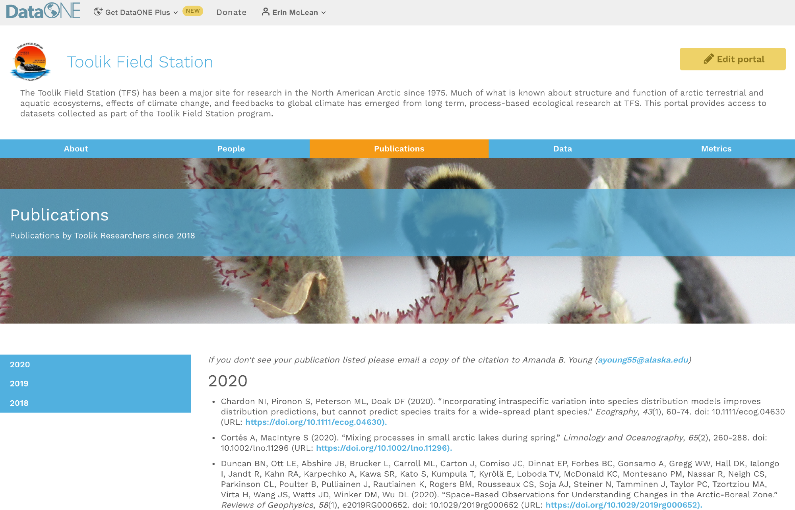
The examples shown on this page are from the Toolik Field Station’s portal; visit this portal to explore its contents further.
Creating Portals
A step-by-step guide on how to navigate DataONE and create a new portal.
Video tutorials on how to create your first portal from the Arctic Data Center, a repository within the DataONE network.
Getting Started with Portals
If you are on DataONE’s primary website, click on your name in the upper right hand corner when you are signed in to DataONE with your ORCID. A dropdown will appear, and you would select “My Portals”.

On your profile settings page, select ‘My Portals’. After the page loads select the yellow button ‘+ New Portal’ to add a new portal, you’ll automatically be directed to a fresh edit session.

Portal About and Settings Page
In a new edit session, the first thing you’ll see is the about page where you’ll be able to add details about your project page.
On the settings tab, you’ll set the basic elements of your portal:
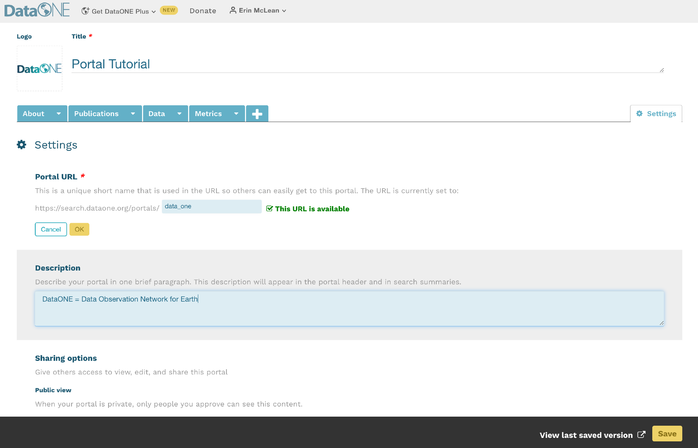
Adding collaborators to help you create your portal is as straightforward as copying and pasting in their ORCID into the box below the permissions section. You can choose whether the collaborator can view, edit, or is an owner of the portal. You can have multiples of each role.
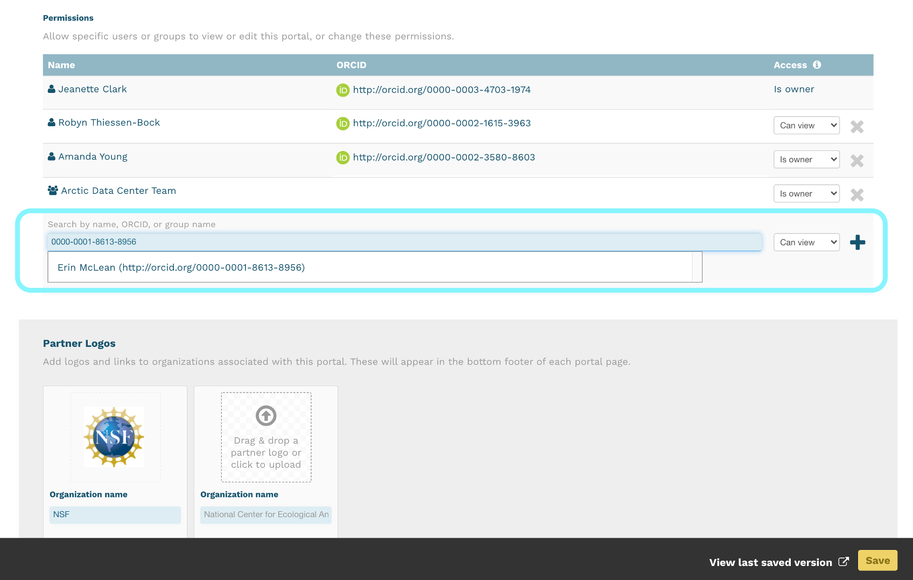
Adding Data to Portals
Video tutorials on using portal search filters from the Arctic Data Center
Navigate to the ‘Data’ tab. In order to populate a portal with the data packages applicable to your needs, you will need to define the search results using the rule options on the top of the page. You can create a rule with any of the metadata fields that DataONE supports, and customize that rule by selecting an operator (like equals, does not equal, or is greater than) the value you select.
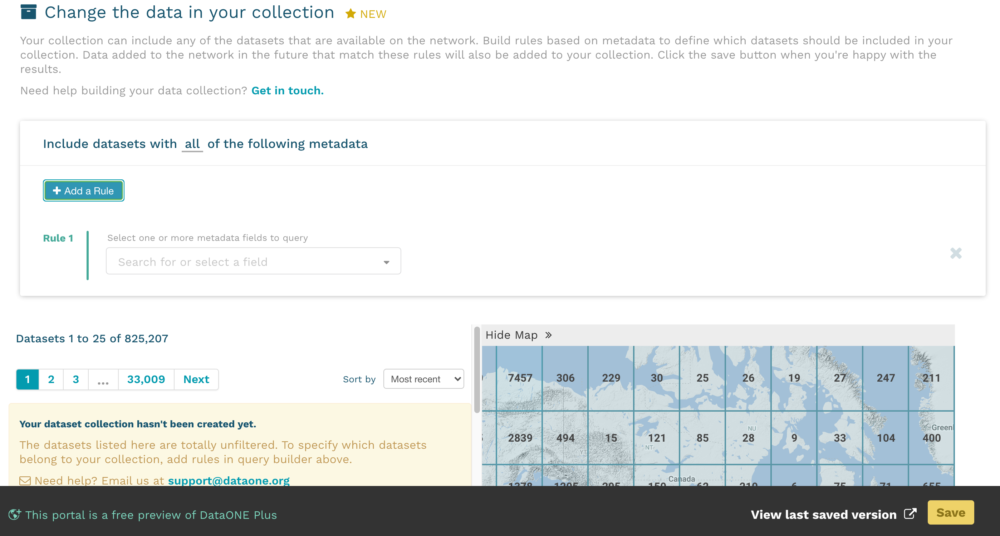
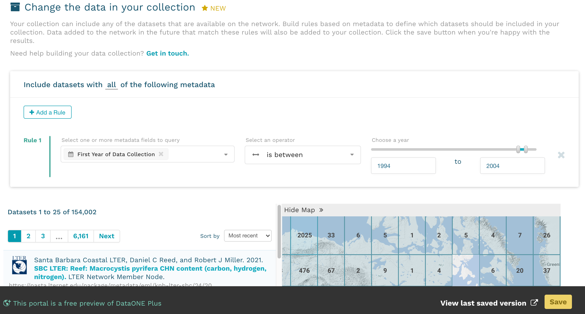
You can create more than one rule, and use the selctor at the top to stipulate whether you want your portal to follow ALL of the rules you’ve specified or ANY of the rules.
 When you’ve selected the data you want, hit the green save button in the bottom right.
When you’ve selected the data you want, hit the green save button in the bottom right.
If you need assistance assembling portal data using a complex query, please contact the DataONE Support Team.
Data Package Metrics
As stated in Portal Main Components, the metrics page is a default function provided by DataONE. This page cannot be edited and cannot be viewed while editing. Users do have the option to delete the page if they’d like. To delete the page, select the arrow next to the word “Metrics” in the tab and choose “Delete” from the dropdown list.
To see metric summaries, navigate to your portal in view mode. See Saving and Editing Portals for more information on how to view portals.
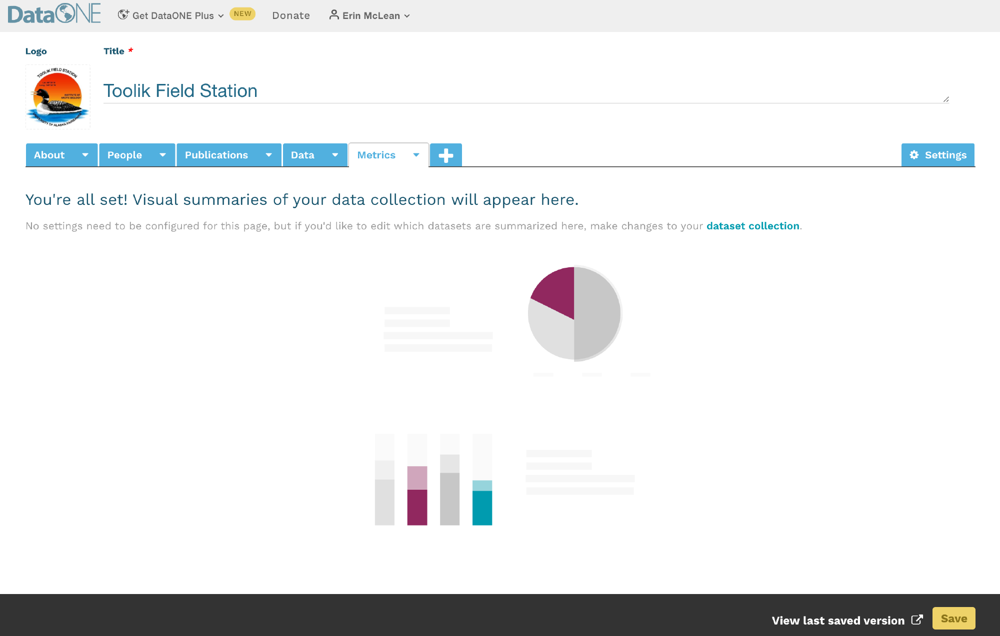
Please contact the DataONE Support Team about any questions or concerns about the metrics page.
Creating Unique Freeform Pages
Video tutorials on creating freeform pages from the Arctic Data Center
To add a freeform page to a portal, select the ‘+’ tab next to the data and metric tabs and then choose the freeform option that appears on screen. A freeform page will then populate.

Easily customize your banner with a unique image, title, and page description. To change the name of the tab, click on the arrow in the ‘Untitled’ tab and select ‘Rename’ from the dropdown list.
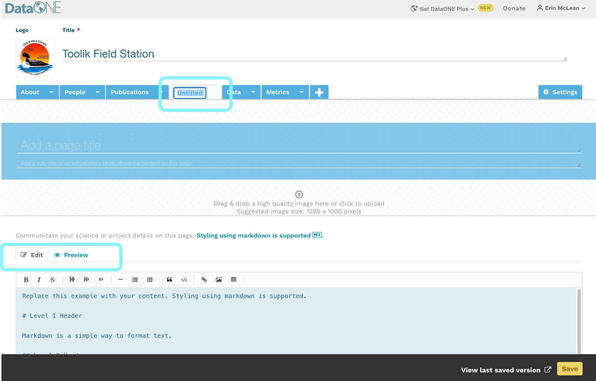
Below the banner, there is a markdown text box with some examples on how to use the markdown formatting directives to customize the text display. There is also a formatting header at the top to assist if you’re unfamiliar with markdown. As you write, toggle through the Edit and Preview modes in the markdown text box to make sure your information is displaying as intended. Portals are flexible and can accommodate as many additional freeform pages as needed.
The markdown header structure helps to generate the table of contents for the page.
Please see these additional resources for help with markdown:
Saving and Editing Portals
Be sure to save your portal when you complete a page to ensure your progress is retained.
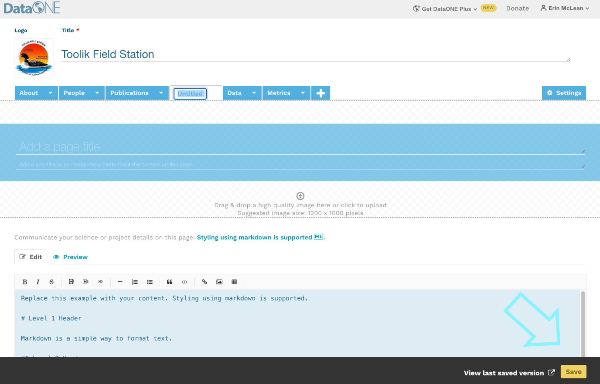
Whenever a portal is saved, a dialogue box will pop up at the top of the page prompting users to view their private portal in view mode. You can choose to ignore this and continue editing.
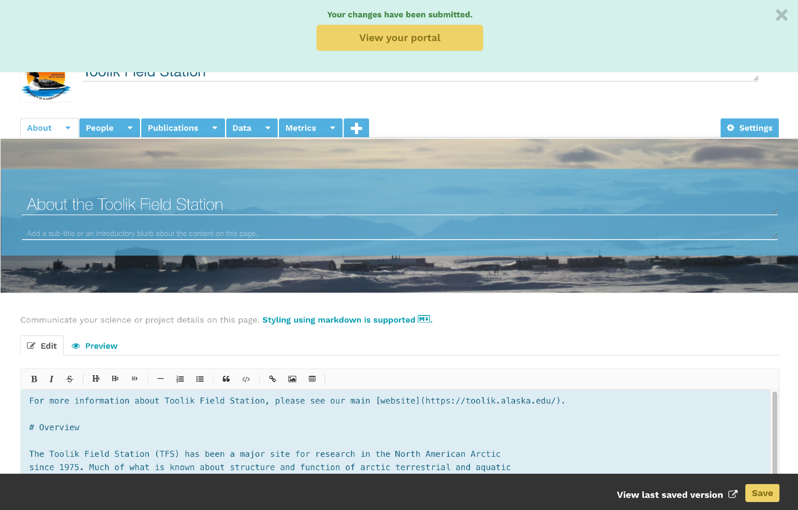
To delete a page from your portal, select the arrow in the tab and choose ‘Delete’ from the dropdown.
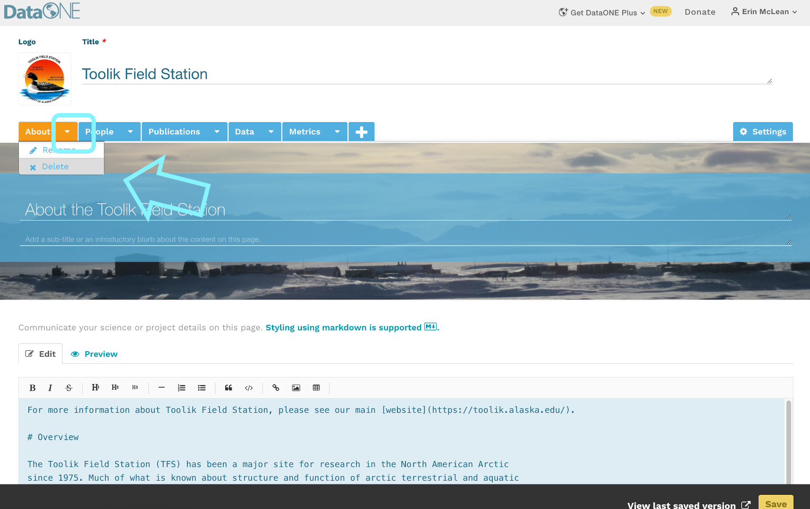
Users can view and edit their portal from their ‘My Portals’ tab.
First, click the arrow your name in the top-right corner to drop down your menu options. Then, select ‘My Portals’ from the dropdown underneath your name. See the section on Getting Started with Portals for more details.
 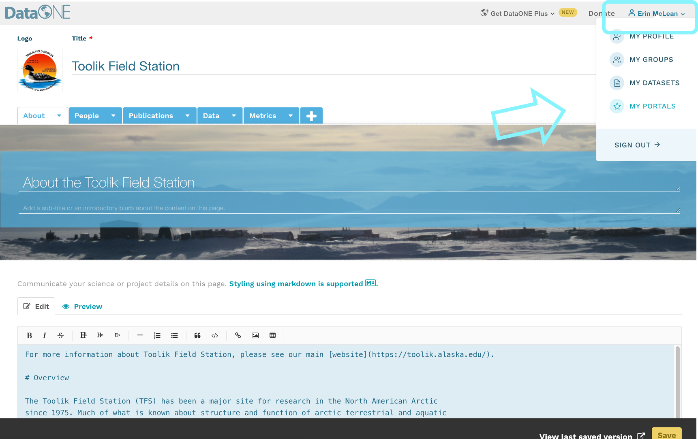
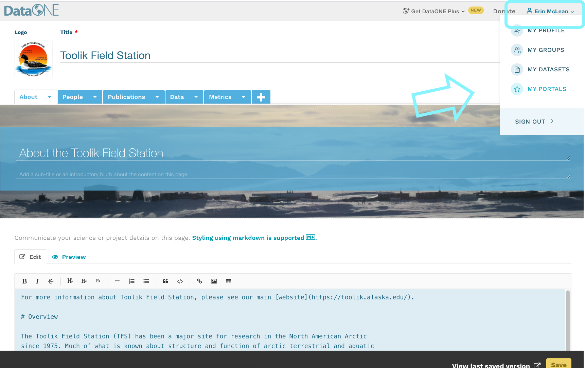
Click on the portal title to view it or select the edit button to make changes.
How to Publish Portals
New portals are automatically set to private and only visible to the portal creator. The portal will remain private until the owner decides to make it public.
To make your portal public, go into the settings of your portal. Under the description, you’ll see a new section called ‘Sharing Options’. You can toggle between your portal being private and your portal being public there.
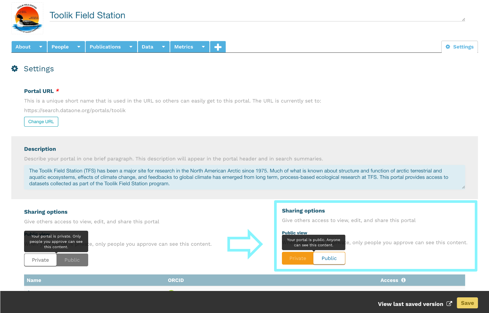
Sharing Portals
In order to share a published portal, users can simply direct recipients to their unique identifier. Portal identifiers are embedded into DataONE’s portal URL: https://search.dataone.org/portals/portal-identifier
To view or edit your portal identifier, go into edit mode in your portal. In the settings page, your portal URL will be the first item on the page.
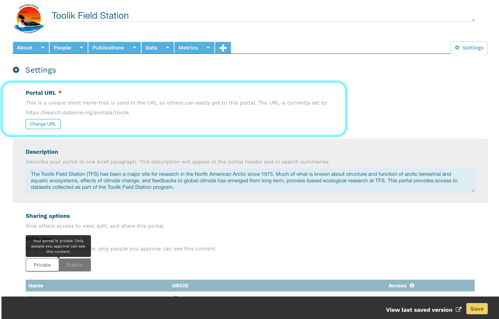
Challenge
Develop a portal within DataONE, pulling together data related to your research, a topic of interest, or products from a research group or organization.
- Build a data query to create a meaningful subset of the DataONE collection
- Use your markdown skills to create an informative About page
- Consider adding links and embedding images or figures from publicly accessible datasets.
Tutorial Videos
For video tutorials on how to create your first portal visit resources on the Arctic Data Center video tutorial page.
Acknowledgements
Much of this documentation was composed by ESS-DIVE, which can be found here.
7 Social aspects of collaboration, data portals
7.1 Collaboration, authorship and data policies
7.1.1 Developing a Code of Conduct
Whether you are joining a lab group or establishing a new collaboration, articulating a set of shared agreements about how people in the group will treat each other will help create the conditions for successful collaboration. If agreements or a code of conduct do not yet exist, invite a conversation among all members to create them. Co-creation of a code of conduct will foster collaboration and engagement as a process in and of itself, and is important to ensure all voices heard such that your code of conduct represents the perspectives of your community. If a code of conduct already exists, and your community will be a long-acting collaboration, you might consider revising the code of conduct. Having your group ‘sign off’ on the code of conduct, whether revised or not, supports adoption of the principles.
When creating a code of conduct, consider both the behaviors you want to encourage and those that will not be tolerated. For example, the Openscapes code of conduct includes Be respectful, honest, inclusive, accommodating, appreciative, and open to learning from everyone else. Do not attack, demean, disrupt, harass, or threaten others or encourage such behavior.
Below are other example codes of conduct:
7.1.2 Authorship and Credit
Navigating issues of intellectual property and credit can be a challenge, particularly for early career researchers. Open communication is critical to avoiding misunderstandings and conflicts. Talk to your coauthors and collaborators about authorship, credit, and data sharing early and often. This is particularly important when working with new collaborators and across lab groups or disciplines which may have divergent views on authorship and data sharing. If you feel uncomfortable talking about issues surrounding credit or intellectual property, seek the advice or assistance of a mentor to support you in having these important conversations.
The “Publication” section of the Ecological Society of America’s Code of Ethics is a useful starting point for discussions about co-authorship, as are the International Committee of Medical Journal Editors guidelines for authorship and contribution. You should also check guidelines published by the journal(s) to which you anticipate submitting your work.
For collaborative research projects, develop an authorship agreement for your group early in the project and refer to it for each product. This example authorship agreement from the Arctic Data Center provides a useful template. It builds from information contained within Weltzin et al (2006) and provides a rubric for inclusion of individuals as authors. Your collaborative team may not choose to adopt the agreement in the current form, however it will prompt thought and discussion in advance of developing a consensus. Some key questions to consider as you are working with your team to develop the agreement:
7.1.3 Data Policies
As with authorship agreements, it is valuable to establish a shared agreement around handling of data when embarking on collaborative projects. Data collected as part of a funded research activity will typically have been managed as part of the Data Management Plan (DMP) associated with that project. However, collaborative research brings together data from across research projects with different data management plans and can include publicly accessible data from repositories where no management plan is available. For these reasons, a discussion and agreement around the handling of data brought into and resulting from the collaboration is warranted and management of this new data may benefit from going through a data management planning process. Below we discuss example data agreements.
The example data policy template provided by the Arctic Data Center addresses three categories of data.
For the first category, the agreement considers conditions under which those data may be used and permissions associated with use. It also addresses access and sharing. In the case of individual, publicly accessible data, the agreement stipulates that the team will abide by the attribution and usage policies that the data were published under, noting how those requirements we met. In the case of derived data, the agreement reads similar to a DMP with consideration of making the data public; management, documentation and archiving; pre-publication sharing; and public sharing and attribution. As research data objects receive a persistent identifier (PID), often a DOI, there are citable objects and consideration should be given to authorship of data, as with articles.
The following example lab policy from the Wolkovich Lab combines data management practices with authorship guidelines and data sharing agreements. It provides a lot of detail about how this lab approaches data use, attribution and authorship. For example:
Section 6: Co-authorship & data
If you agree to take on existing data you cannot offer co-authorship for use of the data unless four criteria are met:
7.1.3.1 Policy Preview
This policy is communicated with all incoming lab members, from undergraduate to postdocs and visiting scholars, and is shared here with permission from Dr Elizabeth Wolkovich.
7.1.4 Extra Reading
7.2 Creating a data portal
Data portals are a new feature available through DataONE. Researchers can easily view project information and datasets all in one place across the federated network of repositories.
7.2.1 What is a Portal?
A portal is a collection of DataONE federated repository data packages on a unique webpage.
Typically, a research project’s website won’t be maintained beyond the life of the project and all the information on the website that provides context for the data collection is lost. Portals can provide a means to preserve information regarding the projects’ objectives, scopes, and organization and couple this with the data files so it’s clear how to use and interpret the data for years to come. Plus, when datasets are scattered across the repositories in the DataONE network, portals can help see them all in one convenient webpage.
Portals also leverage DataONE’s metric features, which create statistics describing the project’s data packages. Information such as total size of data, proportion of data file types, and data collection periods are immediately available from the portal webpage.
7.2.2 Portal Uses
Portals allow users to bundle supplementary information about their group, data, or project along with the data packages. Data contributors can organize their project specific data packages into a unique portal and customize the portal’s theme and structure according to the needs of that project.
Researchers can also use portals to compare their public data packages and highlight and share them with other teams, as well as the broader research audience.
To see some example of what portals could look like, view the Toolik Field Station, Ecoblender Lab and SASAP portals.
7.2.3 Portal Main Components
Portals have five components: an about page, a settings page, a data page, a metrics page, and customizable free-form pages.
7.2.3.1 About Page
This page is the first page users will see after initially creating a new portal, and it is highly recommended that users use this feature to create a description for their portal. Add a picture of your logo, a title and description of your portal, and freeform text using the markdown editor.
7.2.3.2 Settings Tab
On the settings tab, users can give the portal a title and assign it a unique url; also referred to as a portal identifier. Users can add a general description of the portal, upload an icon photo for their data, and upload icon photos from any partner organizations that have contributed to the data. These partner icons will appear in the footer banner on every page in a portal, likewise your portal icon will appear in the header banner.
Every DataONE portal URL will follow this format:
https://search.dataone.org/portals/portal_identifier
7.2.3.3 Data Page
The data page is the most important component of the DataONE portal system. This is where users will display the data packages of their choice. It looks and performs just like the main DataONE user interface.
7.2.3.4 Metrics Page
Unlike the first two pages, the metrics page cannot be edited or customized. It is a default feature that provides the following information about the data packages within a portal:
Please contact DataONE’s support team at support@dataone.org about any questions or concerns about the metrics page.
7.2.3.5 Freeform Pages
Freeform pages are an optional function provided by DataONE portals. Here, users can add as much supplementary information as needed using markdown.
7.2.3.5.1 Example Freeform Pages
Below are two examples of ways users can take advantage of portal freeform pages to tie unique content together with their data packages. Users can add as many tabs as needed.
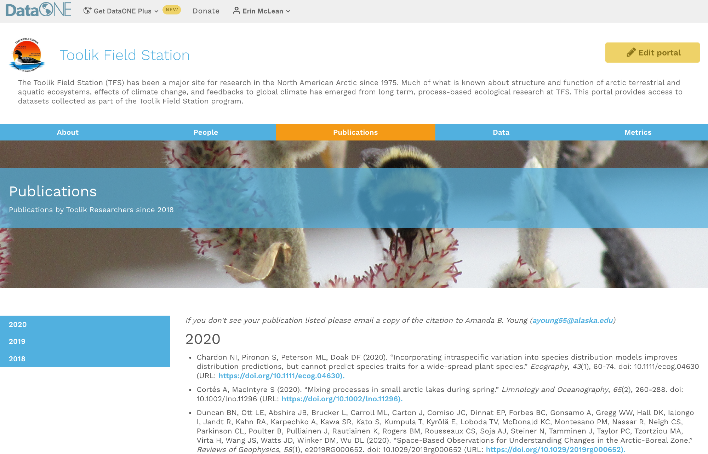
The examples shown on this page are from the Toolik Field Station’s portal; visit this portal to explore its contents further.
7.2.4 Creating Portals
A step-by-step guide on how to navigate DataONE and create a new portal.
Video tutorials on how to create your first portal from the Arctic Data Center, a repository within the DataONE network.
7.2.4.1 Getting Started with Portals
If you are on DataONE’s primary website, click on your name in the upper right hand corner when you are signed in to DataONE with your ORCID. A dropdown will appear, and you would select “My Portals”.
On your profile settings page, select ‘My Portals’. After the page loads select the yellow button ‘+ New Portal’ to add a new portal, you’ll automatically be directed to a fresh edit session.
7.2.4.2 Portal About and Settings Page
In a new edit session, the first thing you’ll see is the about page where you’ll be able to add details about your project page.
On the settings tab, you’ll set the basic elements of your portal:
Portal title
Unique portal identifier
Portal description
Partner organization logos
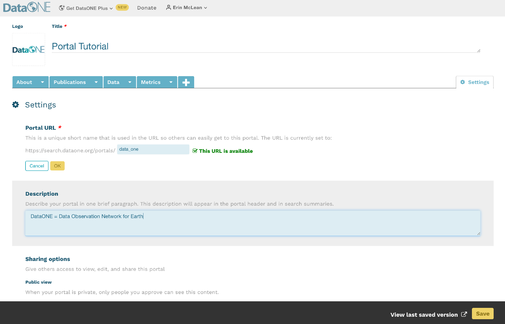
Adding collaborators to help you create your portal is as straightforward as copying and pasting in their ORCID into the box below the permissions section. You can choose whether the collaborator can view, edit, or is an owner of the portal. You can have multiples of each role.
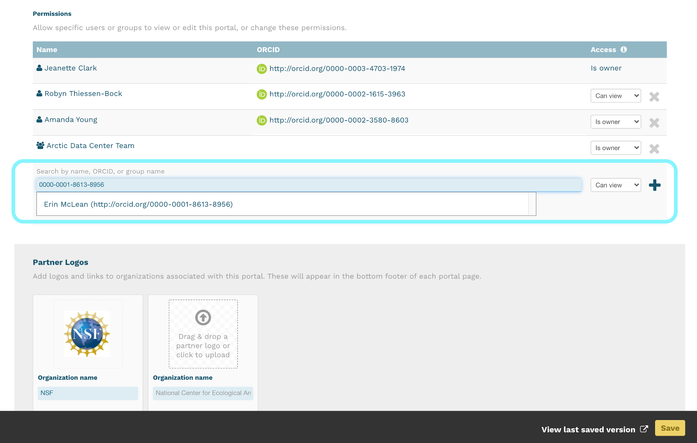
7.2.5 Adding Data to Portals
Video tutorials on using portal search filters from the Arctic Data Center
Navigate to the ‘Data’ tab. In order to populate a portal with the data packages applicable to your needs, you will need to define the search results using the rule options on the top of the page. You can create a rule with any of the metadata fields that DataONE supports, and customize that rule by selecting an operator (like equals, does not equal, or is greater than) the value you select.
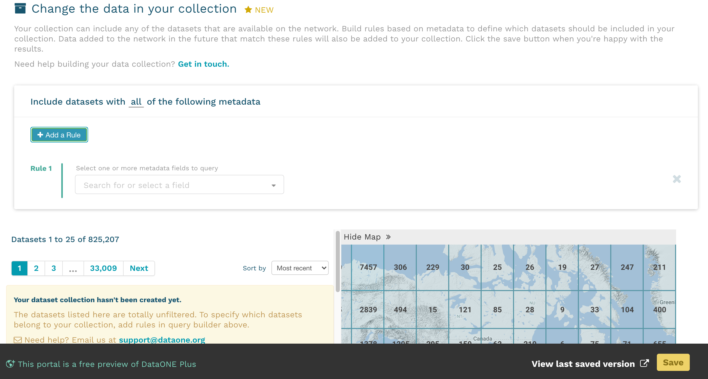 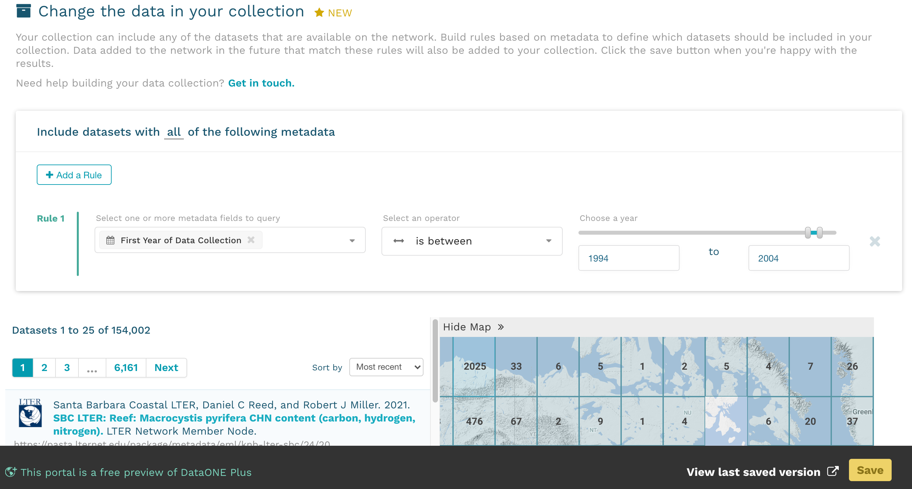
You can create more than one rule, and use the selctor at the top to stipulate whether you want your portal to follow ALL of the rules you’ve specified or ANY of the rules.
If you need assistance assembling portal data using a complex query, please contact the DataONE Support Team.
7.2.5.1 Data Package Metrics
As stated in Portal Main Components, the metrics page is a default function provided by DataONE. This page cannot be edited and cannot be viewed while editing. Users do have the option to delete the page if they’d like. To delete the page, select the arrow next to the word “Metrics” in the tab and choose “Delete” from the dropdown list.
To see metric summaries, navigate to your portal in view mode. See Saving and Editing Portals for more information on how to view portals.
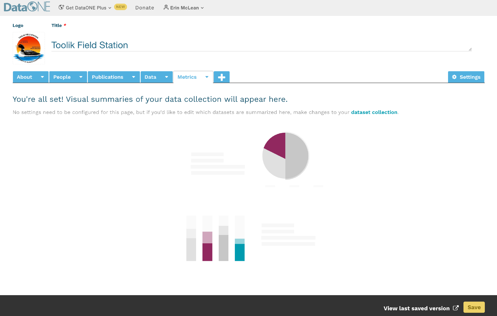
Please contact the DataONE Support Team about any questions or concerns about the metrics page.
7.2.6 Creating Unique Freeform Pages
Video tutorials on creating freeform pages from the Arctic Data Center
To add a freeform page to a portal, select the ‘+’ tab next to the data and metric tabs and then choose the freeform option that appears on screen. A freeform page will then populate.
Easily customize your banner with a unique image, title, and page description. To change the name of the tab, click on the arrow in the ‘Untitled’ tab and select ‘Rename’ from the dropdown list.
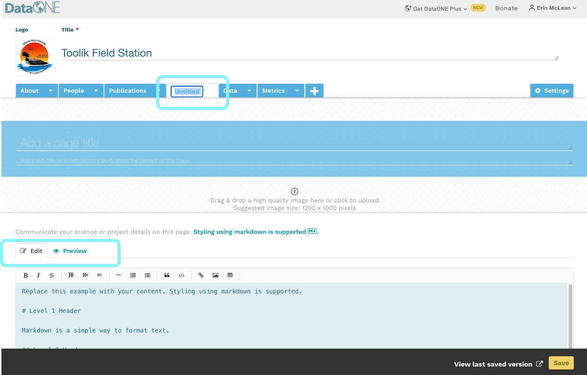
Below the banner, there is a markdown text box with some examples on how to use the markdown formatting directives to customize the text display. There is also a formatting header at the top to assist if you’re unfamiliar with markdown. As you write, toggle through the Edit and Preview modes in the markdown text box to make sure your information is displaying as intended. Portals are flexible and can accommodate as many additional freeform pages as needed.
The markdown header structure helps to generate the table of contents for the page.
Please see these additional resources for help with markdown:
7.2.7 Saving and Editing Portals
Be sure to save your portal when you complete a page to ensure your progress is retained.
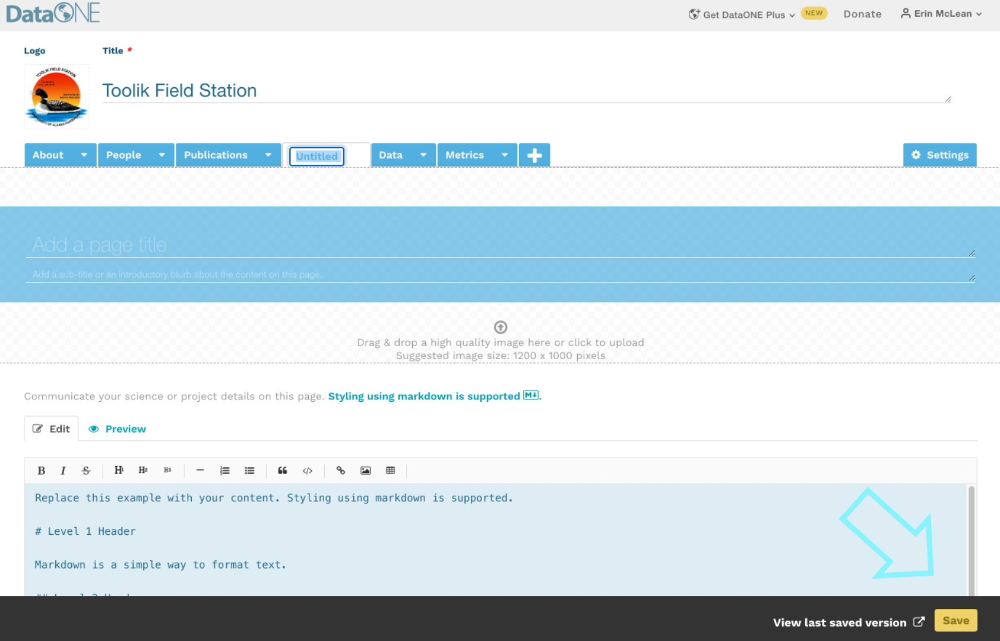
Whenever a portal is saved, a dialogue box will pop up at the top of the page prompting users to view their private portal in view mode. You can choose to ignore this and continue editing.
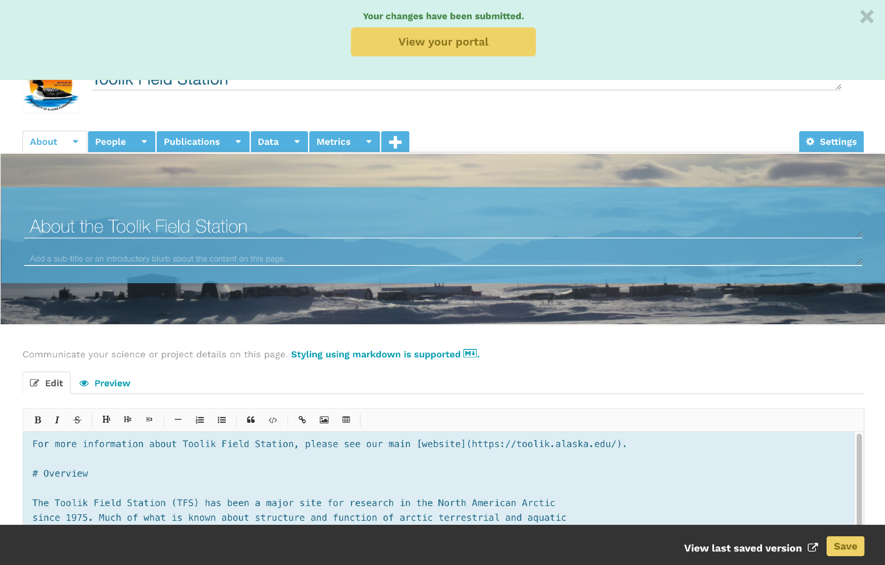
To delete a page from your portal, select the arrow in the tab and choose ‘Delete’ from the dropdown.
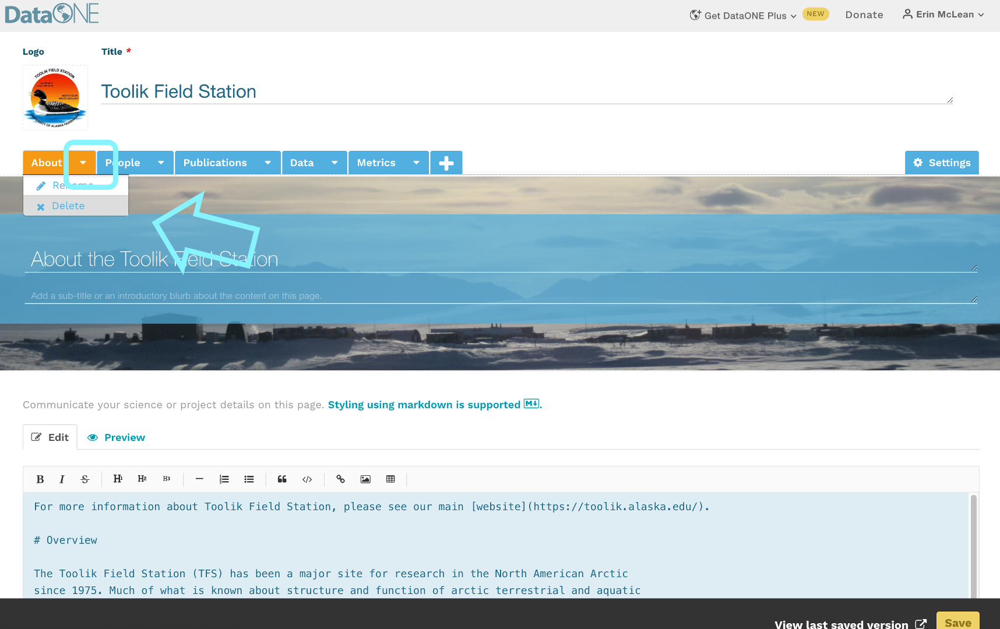
Users can view and edit their portal from their ‘My Portals’ tab.
First, click the arrow your name in the top-right corner to drop down your menu options. Then, select ‘My Portals’ from the dropdown underneath your name. See the section on Getting Started with Portals for more details.
Click on the portal title to view it or select the edit button to make changes.
7.2.8 How to Publish Portals
New portals are automatically set to private and only visible to the portal creator. The portal will remain private until the owner decides to make it public.
To make your portal public, go into the settings of your portal. Under the description, you’ll see a new section called ‘Sharing Options’. You can toggle between your portal being private and your portal being public there.
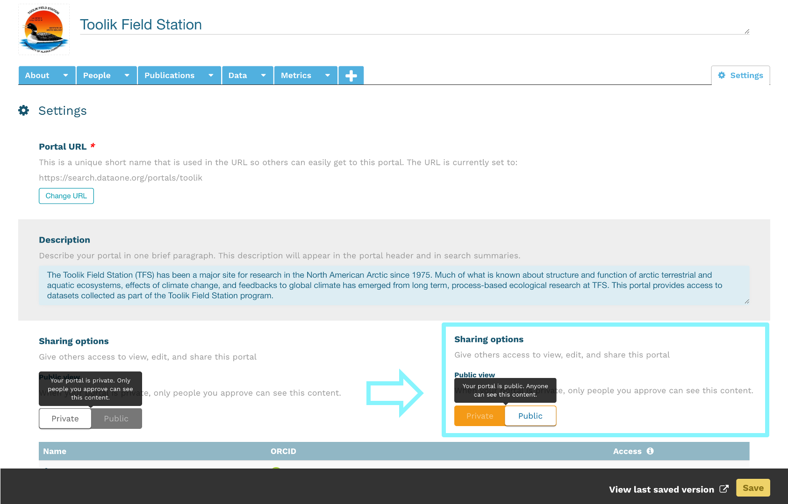
7.2.9 Sharing Portals
In order to share a published portal, users can simply direct recipients to their unique identifier. Portal identifiers are embedded into DataONE’s portal URL: https://search.dataone.org/portals/portal-identifier
To view or edit your portal identifier, go into edit mode in your portal. In the settings page, your portal URL will be the first item on the page.
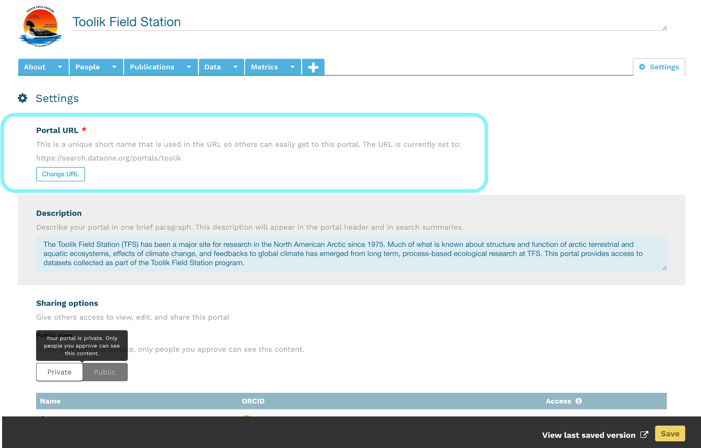
Challenge
Develop a portal within DataONE, pulling together data related to your research, a topic of interest, or products from a research group or organization.
7.2.10 Tutorial Videos
For video tutorials on how to create your first portal visit resources on the Arctic Data Center video tutorial page.
7.2.11 Acknowledgements
Much of this documentation was composed by ESS-DIVE, which can be found here.